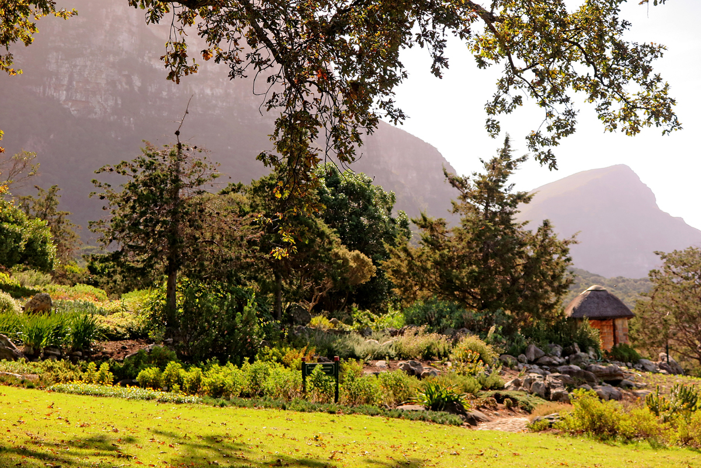
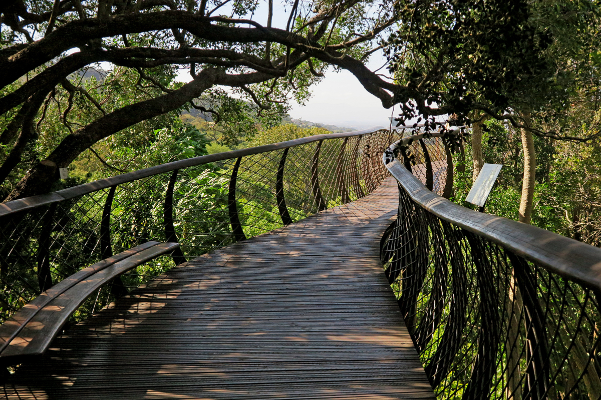
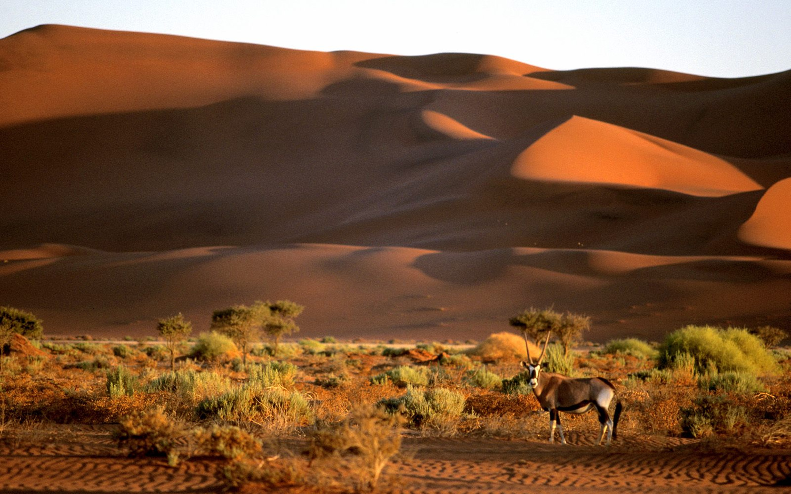
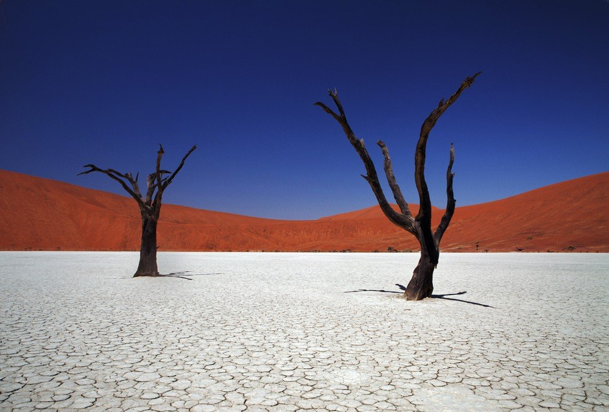
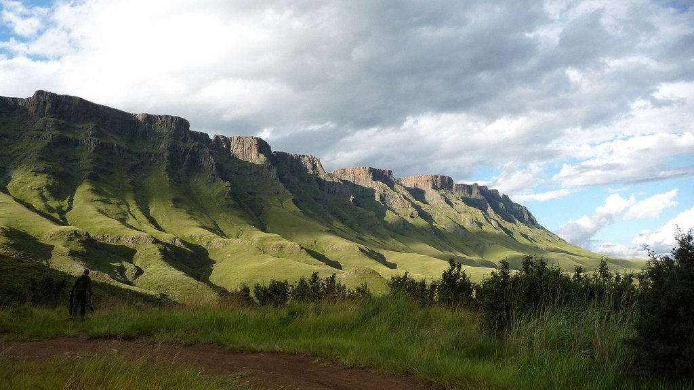
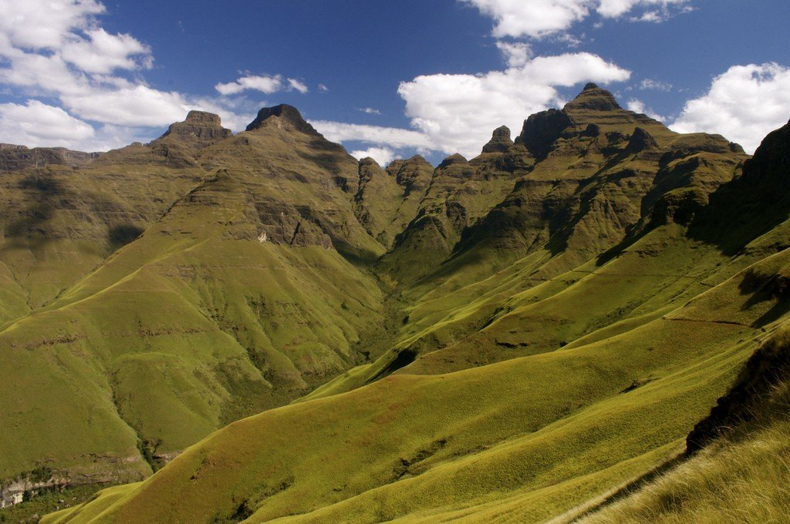
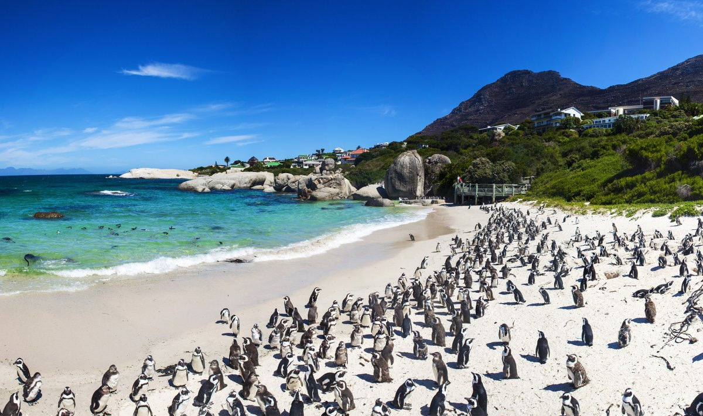
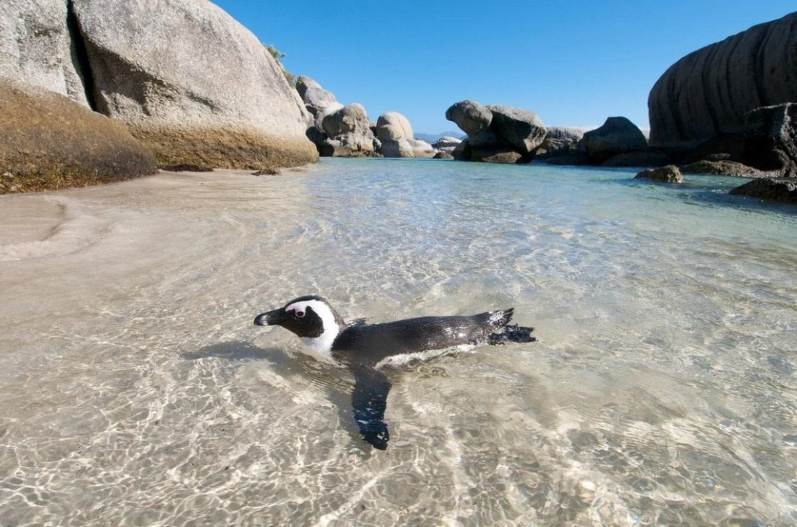
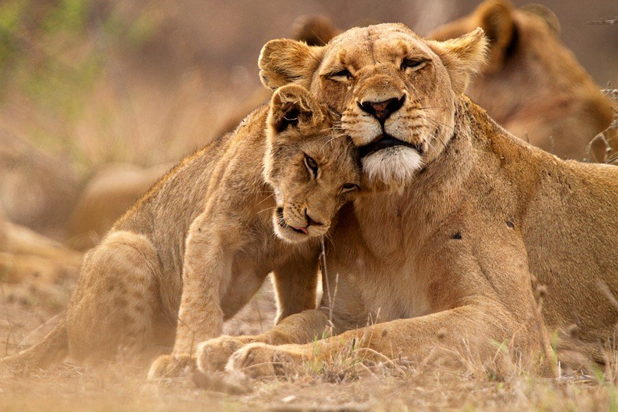
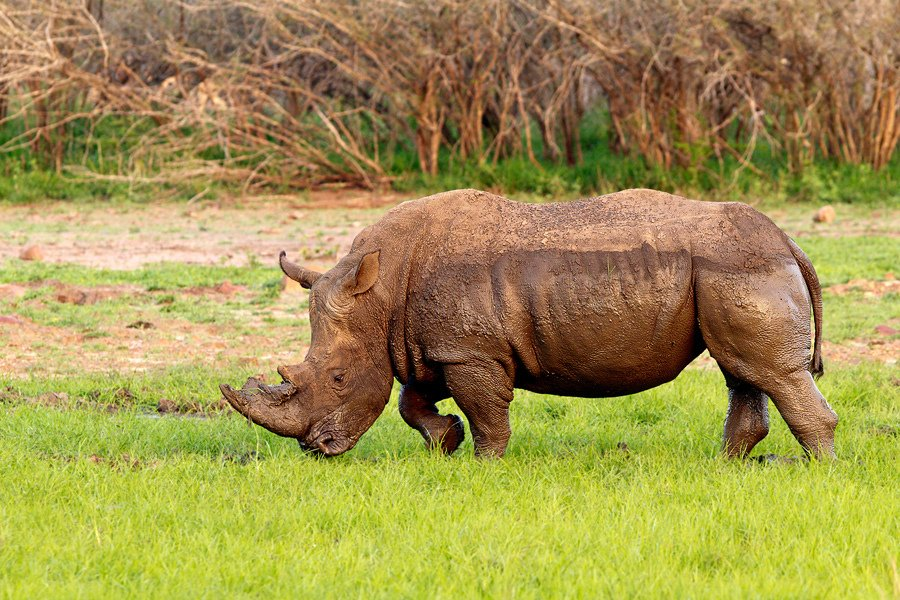

South Africa
Sights of South Africa
South Africa is home to two oceans, rushing waterfalls, wild animals and undiscovered wildernesses.
A tart mixture of ancient and modern cultures attracts sophisticated tourists who want to explore new
destinations.
Kirstenbosch Botanical Garden
Kalahari Desert
Drakensberg Mountains
Boulders Beach
Kruger National Park
Kirstenbosch Botanical Garden
Huge, one of the largest gardens in the world. It is located near Cape Town, near Table Mountain. The
diverse flora here is represented by 7,000 species.
The founder of the garden, long before the official opening date, was Cecil Rhodes, at the beginning of
the 19th century. The white businessman, diamond merchant and politician who bought the Cape Colony
organized the planting of trees,
including oaks, fig trees and camphor trees, creating alleys under them. Harold Pearson continued his
work, complementing the green ensemble with the construction of the University of Cape Town. In addition,
it was decided to significantly expand the diversity of plant species, clearing the space of weeds and
creating many pedestrian alleys.
This was facilitated by the landscape and picturesque area of Mount Table. The official date of
foundation of the magnificent botanical garden was 1913.


Kalahari Desert
The Kalahari Desert is located in a depression with the same name, with an area of 930 thousand km2. Part of
it
extends through Namibia and Botswana.
Iron oxides give the sands of this desert their red, pink, brown, brown tints. The air temperature in the desert
on a
summer day is 40 degrees or more. In winter it drops to -15 °C. The Okavango River flows through the Kalahari.
Its delta
is inhabited by animals and birds: lions, cheetahs, hyenas, giraffes, zebras, gazelles, in addition to large
predators
and ungulates,
which they hunt, you can find a lot of rodents and birds here.
In the Kalahari, there are some types of vegetation in relative abundance, including deciduous trees, shrubs,
and grass
tussocks.


Drakensberg Mountains
The ancient ridges of the Bushman Mountains rise above the land of South Africa, reaching the highest heights of any
mountain on the mainland. The highest point is 3482 m. The main rock they consist of is basalt. These mountains have
many ridges, ravines, ledges and caves. In the darkness they look like huge sleeping dragons.
Hence the name – Drakensberg Mountains.
From north to south, for 8 km, the ridges stretch, an almost vertical sheer wall, thousands of meters in height. The
climate of the western slopes differs from the eastern part. The western zones of the mountains are arid, and in the
east there is a lot of rainfall. In the mountains you can breathe clean air, admire waterfalls, be alone with nature,
away from civilization.
These places are rich in many species of plants and wild animals.


Boulders Beach
It is also called the kingdom of penguins. It is located within the Table Mountain National Park. This is a
beautiful
place, famous for its magnificent views of the sea, large boulders, and of course, penguins.
History says that this place acquired its charming inhabitants in 1982. Then a couple of these birds came here. They
really liked it here, because here you can eat sardines and have a good time. Later they were joined by other
representatives of a large family of birds. Now this colony numbers about 30,000 animals.
Little climbers and swimmers make themselves at home. And for people there is a bridge from which they can admire the
white-breasted beauties and the giant rocks and rocks that hide this corner of South Africa from the winds and waves.
One day there was a shipwreck near the beach and a large oil slick spilled.
The penguins were caught and transported to a similar place, to the north of the mainland. But the colony soon came back
in full force.


Kruger National Park
One of the most visited attractions in South Africa. The huge park is located in two provinces at once: Mpumalanga and
Limpopo. Its area is 20 thousand km2. Kruger National Park is the largest nature reserve in the republic and one of the
largest parks in the world. Animals move freely within its territory,
no enclosures or partitions. About 2000 plant species grow here. Of the fauna, there are about 500 species of birds, a
hundred species of various reptiles, including a large number of crocodiles.
The order of mammals in the Kruger National Park is represented by 150 species of animals. Among the large animals you
can meet here: lions, leopards, elephants, buffaloes, antelopes, hippopotamuses, rhinoceroses.
Entrance to the park is from ten directions through gates. You can travel along the roads in a jeep, through the bush -
on foot,
Or you can fly over it in a hot air balloon. For travelers in the park there are campsites, in various options: from
tents to comfortable ones. The latter are equipped with swimming pools, restaurants, libraries, gas stations, shops and
a golf course.

